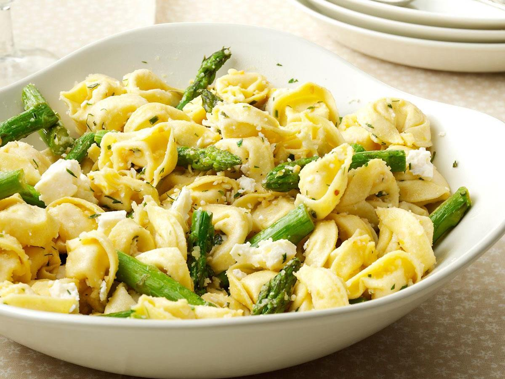

TORTELLINI
Western Dish (Italy)

Takes 30 minutes
Makes 4 servings
MAIN DISH
Ingredients
- 32 ounces chicken broth divided
- 2 tablespoons cornstarch
- 1 (16 ounce) package frozen cheese tortellini
- 4 tablespoons butter
- 2 cloves garlic minced
- 2 teaspoons dried basil
- 1/4 cup Parmesan cheese for garnish
- fresh parsley minced, for garnish, optional
Instruction
- 1. In a large pot, bring 2 ½ cups broth to a boil. Add cheese tortellini. Return to a boil and cook about 5 minutes. The tortellini will float to the top when cooked and the internal temperature should be 165ºF for at least 15 seconds. Drain completely.
- 2. Meanwhile, whisk together remaining 1 ½ cups broth with corn starch. In a large non-stick skillet, melt butter over medium-high heat until foaming. Stir in garlic and basil and cook about 2 minutes.
- 3. Add broth-cornstarch mixture and bring to a boil; simmer until the mixture thickens. Add the cooked tortellini to the skillet and toss to coat.
- 4. Pour into a serving dish and garnish with Parmesan cheese and parsley, if desired.
SOURCE : www.culinaryhill.com
Add to Cart
want to try this recipe? order ingredients now!